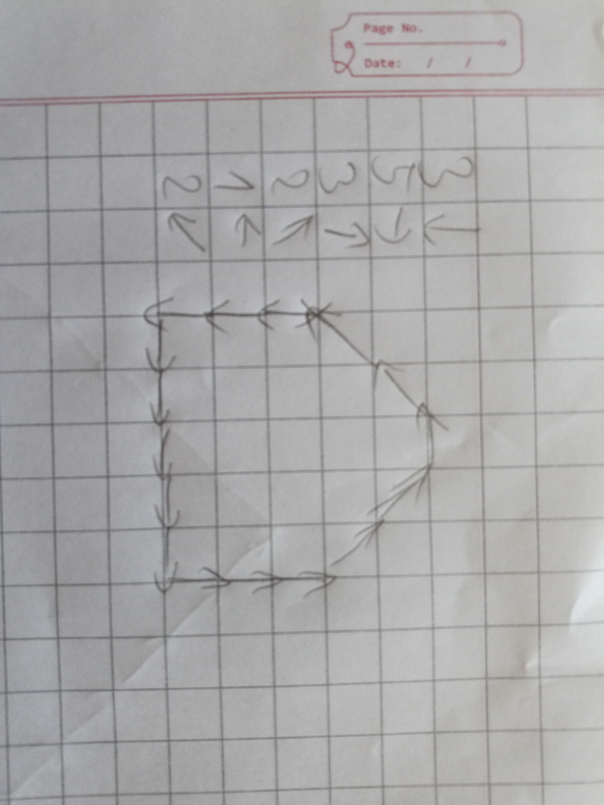
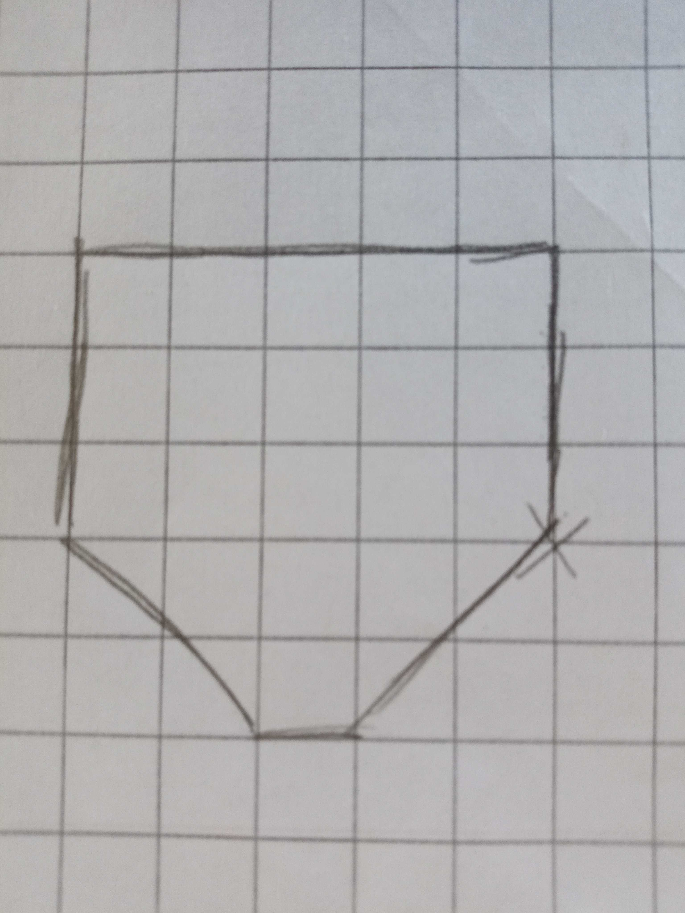

Am I a computer?
Aims of the class
- Learn what is unplugged programming
Example
 
Using provided paper draw lines from starting point
- 4 ⬅️
- 2 ↖️
- 2 ↙️
- 4 ⬅️
- 2 ↖️
- 6 ↗️
- 8 ↘️
- 1 ⬇️
- 19 ⬅️
- 4 ↗️
- 1 ↘️